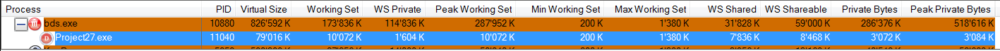
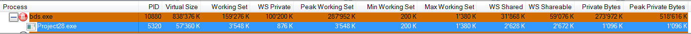

Миф №11: Delphi приложение занимает много памяти
Я уже высказывался на эту тему и даже говорил о типичных ошибках при поиске утечек памяти.
Самое время взяться за эту легенду!
Я взял последнюю версию Delphi на сегодня - Delphi XE (ведь известно, чем старше версия Delphi, тем больший размер она имеет) и создал в ней два пустых приложения - VCL Forms и консольное. Запускаем и видим - VCL Forms:

И консольное:

Вы только посмотрите на эти числа: около 80 и 57 мегабайт! И это - пустые приложения. Просто ужасно.
Кажется, что легенда подтверждена, но так ли это? Давайте посмотрим внимательнее.
Напомню, что это - виртуальная память. Никого не волнует, сколько её вы захапаете. Для экосистемы приложений важно, сколько оперативной (физической) памяти вы занимаете. Почему? Ну, чем плохо, что вы тратите много ресурсов? В абстрактном вакууме - ничем. Если в системе есть ресурсы - тратьте их как угодно. Но на практике машину не покупают для запуска исключительно вашей программы, поэтому здесь важно, что на машине работают и другие программы. Вот почему важно, чтобы вы оставляли как можно больше совместных ресурсов свободными - чтобы ими могло воспользоваться больше программ. Но ведь виртуальное адресное пространство не является общим ресурсом! Оно своё у каждой программы. А общий ресурс - это процессор и физическая память. Вот они делятся между всеми программами, в отличие от виртуального адресного пространства, которое выделяется каждой программе в эксклюзивное пользование.
Мне кажется, что этот миф происходит из неосознавания этой связи.
Но легенда ещё не разрушена - что там у нас с физической памятью?
Каждой программе при её работе выделяется физическая память. Программа не может работать с памятью, выгруженной на диск. Если программа выполняет код, находящийся в файле подкачки, либо обращается к данным, выгруженным на диск, то система автоматически загрузит эти код и данные в оперативную память. Если там есть свободное место. Если его там нет - то часть старых данных (к которым давно не было обращения или к ним обращаются редко) будет выгружена на диск, чтобы освободить место для новых данных. Оперативная память тратится и на такие вещи как дисковый кэш.
Итак, что там с оперативной памятью в нашей программе? Если вы посмотрите на снимки экрана выше, то получите два числа: 10'072 Кб для VCL Forms и 3'548 Кб для консольного (колонка "Working Set Size", это значение также называется "песочницей" программы и показывается Диспетчером Задач в колонке "Память"). Кажется, что это огромные значения - в несколько раз больше размера .exe файлов (который равен 894 Кб для VCL Forms и 22 Кб для консольного).
Кажется, что теперь легенда подтверждена? Но не будем спешить с выводами.
Как мы узнали выше, память в адресном пространстве, хотя и выделяется с кратностью в 64 Кб, но минимальным блоком (для прочих операций с памятью) является страница памяти (она имеет размер в 4 Кб на текущих редакциях Windows). Кроме того, мы узнали, что одна и та же страница памяти может присутствовать (быть ассоциирована) с несколькими программами (адресными пространствами). Вспомните проецируемые в память файлы.
К чему я это говорю?
Когда вы запускаете одну и ту же программу второй раз, система просто открывает другое проецируемое в память представление объекта "проекция файла", идентифицирующего образ исполняемого файла. С помощью проецируемых в память файлов несколько одновременно выполняемых экземпляров программы могут совместно использовать один и тот же код, загруженный в оперативную память. Т.е. система просто-напросто проецирует страницы виртуальной памяти, содержащие код и данные .exe файла, второй программы на адресное пространство первого экземпляра программы.
Если один экземпляр программы модифицирует какие-либо данные, размещенные на общей (разделяемой)странице данных, система перехватывает эту попытку, выделяет новый блок памяти, копирует в него нужную программе страницу и после этого разрешает запись в новый блок памяти. Благодаря этому механизму (называемому copy-on-write - копирование при записи), работа остальных экземпляров программы не нарушается. Аналогичная цепочка событий происходит и при отладке приложения. Например, запустив несколько экземпляров программы, вы хотите отладить только один из них. Вызвав отладчик, вы ставите в строке исходного кода точку прерывания. Отладчик модифицирует ваш код, заменяя одну из команд на языке ассемблера другой — заставляющей активизировать сам отладчик. И снова система использует копирование при записи. Обнаружив попытку отладчика изменить код, она выделяет новый блок памяти, копирует туда нужную страницу и позволяет отладчику модифицировать код на этой копии.
Иными словами, то, что вашей программе выделено 10'072 Кб оперативной памяти, - ещё не означает, что это "её вина". Т.е. эти 10'072 Кб - не лично ваша собственность, они совместно используются ещё и другими программами. Можно ли узнать, сколько в этих 10 Мб ваших данных? Да, можно. Это значения в колонке "WS Private" (private working set). Для VCL Forms мы получаем 1'604 Кб, а для консольного - 876 Кб. Это и есть те реальные значения, на которые ваша программа загружает систему. Ради сравнения - эти же программы на Delphi 3 дают 692 Кб и 332 Кб соответственно. Достаточно мало и намного меньше тех значений, о которых обычно думает тот, кто кричит: "ай как много занимает памяти Delphi приложение". И это в системе, где куча свободной ОЗУ и нет давления на память - т.е. это почти максимум. В условиях давления на память эти значения были бы ещё ниже. Посмотрите, как в мифе №1 размер потребляемой Total Commander-ом оперативной памяти снизился с 1'080 Кб до 136 Кб в условиях нехватки памяти (выделения 2x512 Мб на системе с 256 Мб ОЗУ). И заметьте, что даже при выделении 1 Гб памяти, песочница вашей программы осталась очень компактной - менее 2 Мб: потому что к этой памяти мы не обращались. Мы её только выделили.
Статус мифа: busted.